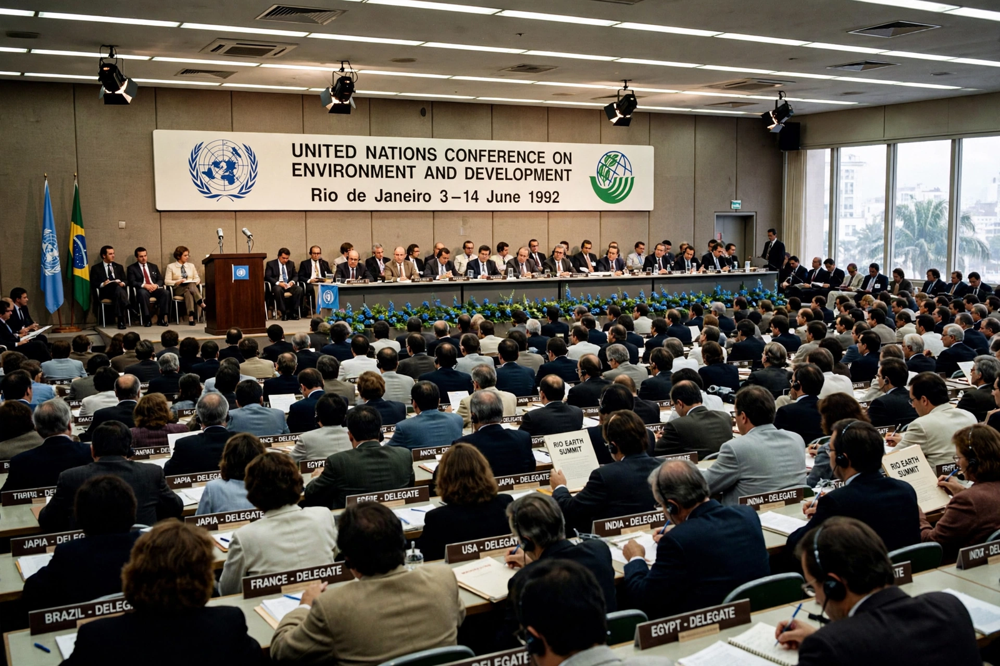

Earth Summit

The Earth Summit, formally the United Nations Conference on Environment and Development (UNCED), was held in Rio de Janeiro, Brazil from 3 to 14 June 1992. It was the largest gathering of world leaders to that date and the landmark event of modern environmental diplomacy, attended by representatives of some 172 governments, including over a hundred heads of state or government.
Its slogan-era ambition was to reconcile economic development with protection of the planet — the agenda that became known as sustainable development.
Outcomes
The conference produced the Rio Declaration of principles; Agenda 21, a vast action plan for sustainable development into the 21st century; and the Forest Principles. Most durably, two treaties were opened for signature at Rio: the {L('United_Nations_Framework_Convention_on_Climate_Change','Framework Convention on Climate Change')} and the Convention on Biological Diversity, with a third, the Convention to Combat Desertification, following in 1994.
UNCED also energised civil society: a parallel Global Forum of non-governmental organisations ran alongside the official talks, prefiguring the activist presence at all later summits.
Legacy
Follow-up summits in Johannesburg (2002) and Rio again in 2012 ('Rio+20') reviewed progress, and the process eventually produced the Sustainable Development Goals in 2015. Judged by the state of the climate and biodiversity, Rio's promises remain largely unfulfilled; judged by institutions, almost everything in global environmental governance descends from it. See {L('Sustainable_development')}.
See also: United Nations Framework Convention on Climate Change · Sustainable development · Climate change · Biodiversity · Environmental protection